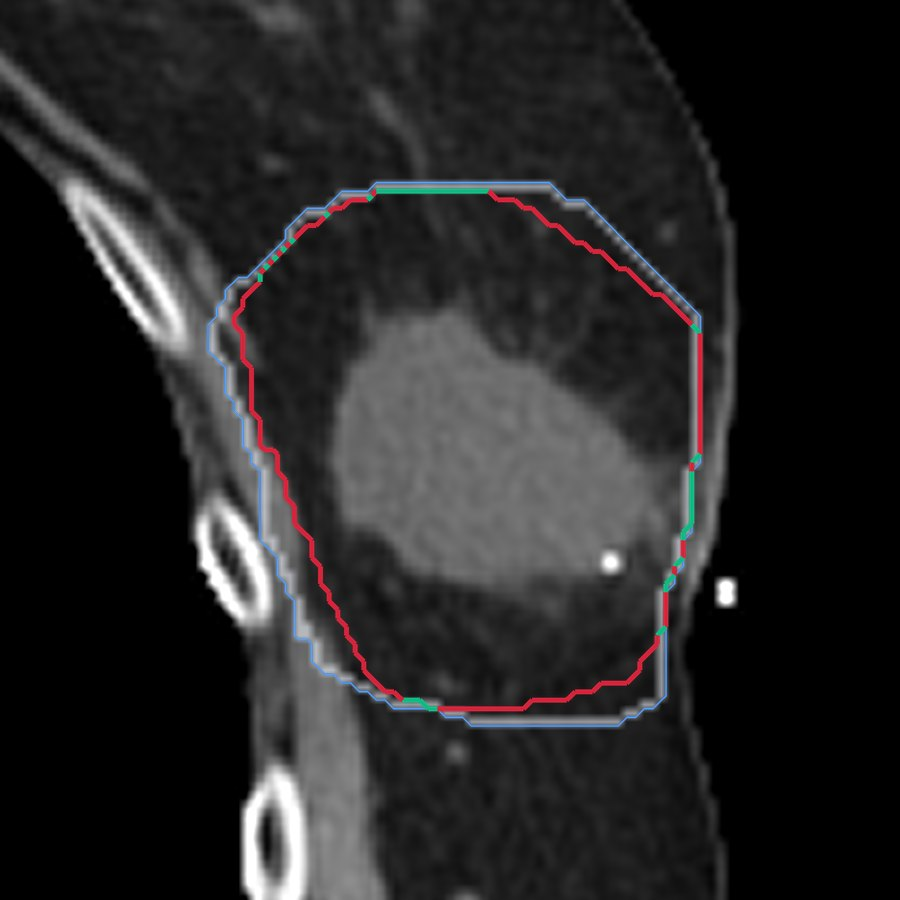
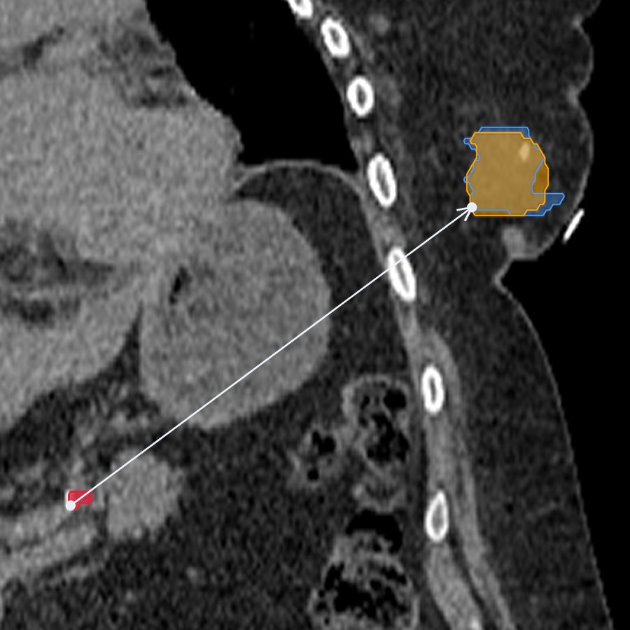

Beyond Deployment
An in-house system for continuous quality assurance of auto-segmentation models once they are live in the clinic.
Jonathan Cheng, Nicholas Molina, Kelechi Obike, Sara Arias-Obando, Rafe McBeth, PhD
Penn Medicine, Department of Radiation Oncology
Live demo on Monday, October 26, 4:30 to 6:00 PM ET, Arthur H. Rubenstein Auditorium
Deploying a model is not the last step
AI now drafts the organ and tumor contours that decide where radiation goes. We QA our linear accelerators on a rigorous schedule, but there is no standard yet for checking that a deployed model keeps doing what the clinic needs. Before that standard can exist, someone has to measure how these models perform over time.
What it does
- Pulls each treatment plan's CT, contours and dose from our Orthanc archive.
- Separates clinician-approved contours from AI-generated ones using their DICOM approval status.
- Matches structures across naming conventions, so a clinician's "L_Lung" pairs with a model's "Lung_L": a curated alias list first, then best overlap, exact names and finally fuzzy matching.
- Scores every matched pair with dcm-utils, our lab's DICOM geometry package, for overlap (Dice, Jaccard, surface Dice at 1 mm, and a target-weighted Dice that counts disagreement near the tumor most), boundary distance (average surface distance, and Hausdorff at the 95th percentile and the maximum) and editing effort (added path length: how much contour a clinician would redraw). It also records each contour's volume and how many separate pieces it has.
- Shows the cohort's averages, score distributions per structure, trends over time, model-version comparisons and a patient search. Clicking any point on a chart opens that patient's results.
- Never names a patient: no patient ID leaves the database, patients and studies appear only as anonymized codes, and study dates only as years.
One number is never enough
Each metric misses something another one catches, so the dashboard shows them side by side. Two de-identified cases from a separate research set show why. The dashboard's own Methodology page works through every metric, with its formula and a real scan.

High overlap, boundary off
The AI's target volume overlaps the approved one with a Dice of 0.87, which sounds close. But the AI contour sits on average about 2 mm inside the approved one, and only 23% of its surface lies within 1 mm of it. Surface Dice, 0.23 here, asks how much of the boundary a clinician could accept without editing.

Mostly right, with a piece 18 cm away
By Dice alone, this tumor contour looks mostly right. The distances and the piece count show that the AI also drew a small second piece far from the target.
| Metric | Value |
|---|---|
| Dice | 0.75 |
| Surface Dice (1 mm) | 0.34 |
| Hausdorff, 95th percentile | 172 mm |
| Hausdorff, maximum | 181 mm |
| Separate pieces (AI) | 2 |
Running on real clinical data
- 8,097studies processed to date.
- 7,422patients covered.
Tell us what you think
Come to the live demo, or find us at the networking reception on Monday, October 26, 6:00 to 7:00 PM ET.
- Is continuous monitoring of deployed auto-segmentation useful, and could your institution adopt it?
- What agreement should separate an acceptable AI contour from one that needs editing, and should that differ by structure?
- What would a daily user want that we haven't thought to build?
Or write to Rafe McBeth at rafe.mcbeth@pennmedicine.upenn.edu.
Also from our lab
Spinning the Data Engine: a review portal for curating training data and running blinded AI-versus-physician comparisons. AI Builder Showcase video, playing in the Commons.
Clinical Validation of Commercial AI Prostate SBRT Planning: a commercial AI planner against our manual plans, and the in-house fix for what it missed. Scientific poster on Monday, October 26, 12:15 to 1:00 PM ET, in the Commons.